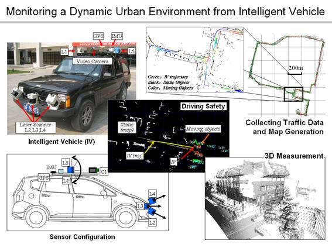

<!-- Content -->
<div id="re_content" class="row">
  <div class="large-12 columns">
    <h1>Segmentation and Classification of Range Image</h1>
    <h2><b>Xiaolong Zhu</b>, Huijing Zhao, Yiming Liu, Yipu Zhao, Hongbin Zha.</h2>
    <p>This project is done during my undergraduate work.
    Based on the intelligent vehicle <a href="http://poss.pku.edu.cn">POSS</a>, I process range data from two range sensors (SICK LMS 200).</p>
    <p>The data can be represented as 3D point clouds combining the pose and location of the
    vehicle. Meanwhile, it can also be represented as range image due to the property of range
    sensor. Then a Computer Vision framework of image segmentation and classification is applied
    to this range image to give each point a semantic label. The whole data is processed offline.</p>
    <p></p>
    <p>More details are in this <a href="http://www.cis.pku.edu.cn/faculty/vision/zhaohj/common/research%20vision.htm">website</a>.</p>
  </div>
</div>